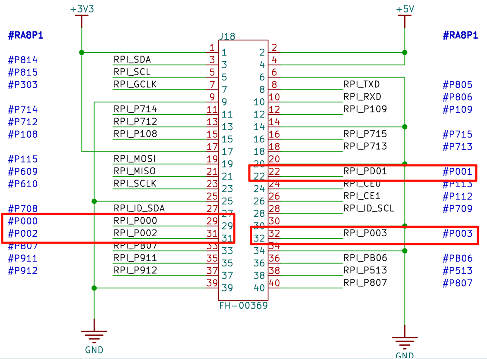
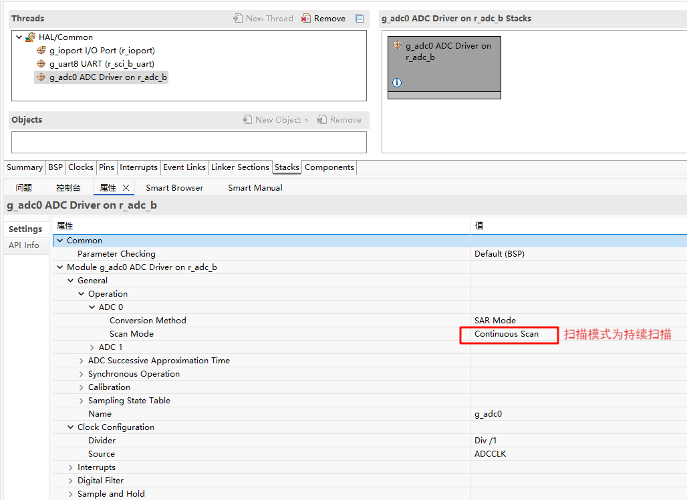
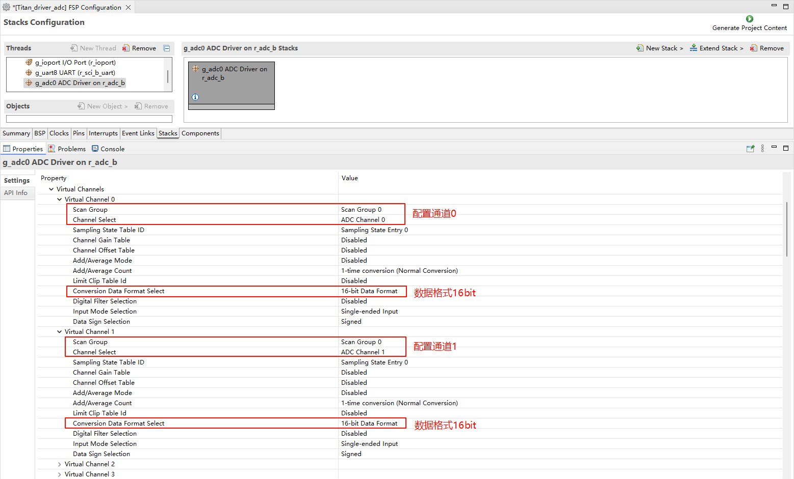
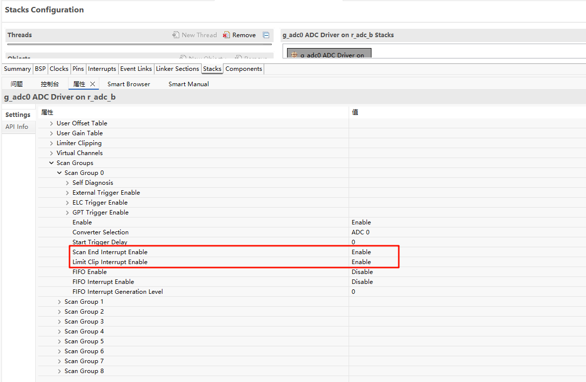
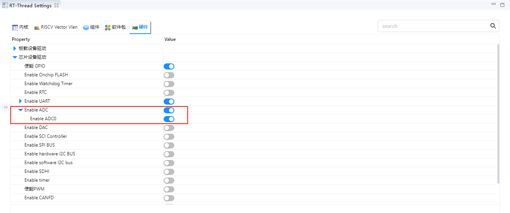
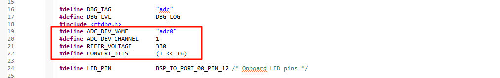
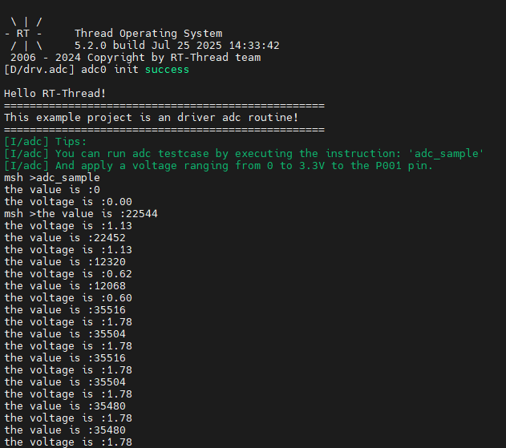

ADC 应用示例说明
中文 | English
简介
本示例展示了如何在 Titan Board 上使用 RA8 系列 MCU 的 ADC（Analog-to-Digital Converter），结合 RT-Thread ADC 驱动框架进行模拟信号采集和处理。
主要功能包括：
初始化 ADC 硬件模块
配置 ADC 通道、采样时间和触发方式
通过 RT-Thread ADC 驱动接口读取模拟信号
支持单次采样、连续采样及硬件触发
RA8P1 ADC 特性
1. ADC 概述
ADC（Analog-to-Digital Converter） 是将连续的模拟信号转换为离散的数字信号的器件或模块，是现代数字控制系统、信号处理和测量系统中的核心部件。
功能：把电压、电流等连续信号转换为数字值，以便微控制器（MCU）、DSP 或 FPGA 进行处理。
重要指标：
分辨率（Resolution）：ADC 输出的数字位数，表示可区分的电平数。RA8P1 为 16 位，即 2^16 = 65536 个不同电平。
采样率（Sampling Rate）：ADC 每秒采样次数，影响可捕捉的信号频率范围。
输入范围（Input Range）：ADC 能处理的模拟电压范围。
精度（Accuracy）：表示 ADC 输出与实际输入信号的接近程度，受噪声、非线性、偏移误差影响。
2. ADC 工作原理
ADC 通常分为几个阶段：
采样与保持（Sample & Hold, S/H）
将连续变化的模拟信号在采样瞬间固定，保证后续转换过程中信号不变。
RA8 系列 ADC 支持 采样保持时间可调，可优化高阻抗信号采样。
量化（Quantization）
将模拟信号划分为离散电平，每个电平对应一个数字编码。
16位 ADC 将输入电压范围分为 65536 个电平，量化精度可以表示为：ΔV = VREF / 65536。
编码（Encoding）
将量化后的电平转换成二进制代码输出。
RA8P1 ADC 支持 右对齐/左对齐数据输出，便于不同应用场景读取。
3. ADC 类型与 RA8P1 特性
该 MCU 包含两组 噪声整形型 SAR 型 A/D 转换器（ADC16H），其为 SAR 型与 Δ-Σ 调制型特性混合的架构。A/D 转换器单元 0（ADC0）最多可选择 15 路模拟输入。A/D 转换器单元 1（ADC1）最多可选择 15 路模拟输入。温度传感器、内部参考电压、VBATT 1/6 电压监测输出以及 D/A 转换器的输出均可由 A/D 转换器单元 0 或单元 1 进行 A/D 转换。A/D 转换数据可选择 16 位、14 位、12 位和 10 位的数据格式。
ADC16H 具有以下特性：
● 分辨率：最高 16 位
● 快速转换：最高 6.25 Msps（每通道 0.16 µs）（当 A/D 转换时钟 ADCLK = 50 MHz）
● 输入通道：最多 23 路模拟输入通道
● 支持单端输入或差分输入
● 自校准功能
● 内置通道专用采样保持电路（S&H）
SAR ADC工作流程：
采样保持输入电压
逐步比较输入与DAC输出
根据比较结果调整二进制码
输出数字值
4. ADC关键参数解释
分辨率（Resolution）
RA8P1 16 位 ADC：理论最小可分辨电压 ΔV = VREF / 65536。
举例：VREF=3.3V，则 ΔV ≈ 0.00005 V ≈ 50 μV。
采样时间（Sampling Time）
决定输入电压稳定性与 ADC 误差。
高阻抗信号需要较长采样时间，否则可能出现采样误差。
线性度（Linearity）
INL（Integral Nonlinearity）：累积误差，理想直线偏离实际值
DNL（Differential Nonlinearity）：相邻码间的间隔误差
噪声与精度
系统噪声会影响低电平分辨率，RA8P1 ADC 在 16 位模式下实际有效位通常略低于16 位（比如 15 位有效位）。
输入阻抗
高输入阻抗信号可直接采样，低阻抗或高速信号需要缓冲电路。
5. RA8P1 ADC 的典型应用
工业测量：温度、压力、流量传感器采集
电机控制：电流、电压采样，实现闭环控制
信号处理：音频采集、振动监测
数据记录：多通道高速采样，存储或发送到上位机
RT-Thread ADC 驱动框架
RT-Thread ADC（Analog to Digital Converter）框架 是 RT-Thread 设备驱动层提供的统一接口，用于管理各类 MCU 的模数转换器硬件模块。该框架将底层 ADC 硬件抽象为标准化的设备接口，使应用层能够通过统一 API 获取模拟信号的数字量，实现跨平台的模数采集功能。
1. 设备模型
在 RT-Thread 中，ADC 被作为 设备对象（struct rt_device 的子类，类型为 RT_Device_Class_ADC）进行管理。开发者无需直接操作底层寄存器，只需通过 RT-Thread 提供的标准设备接口，即可完成 ADC 通道的开启、采样和关闭操作。
2. 操作接口
应用程序通过 RT-Thread 提供的 I/O 设备管理接口来访问 ADC 设备，相关接口如下所示：
查找 ADC 设备
rt_device_t rt_device_find(const char* name);
使能 ADC 通道
rt_err_t rt_adc_enable(rt_adc_device_t dev, rt_uint32_t channel);
读取 ADC 通道采样值
rt_uint32_t rt_adc_read(rt_adc_device_t dev, rt_uint32_t channel);
禁用 ADC 通道
rt_err_t rt_adc_disable(rt_adc_device_t dev, rt_uint32_t channel);
3. 框架特点
接口统一：所有硬件 ADC 模块通过相同接口访问，简化了上层开发。
跨平台支持：应用程序可在不同 MCU 平台间移植，无需修改 ADC 操作代码。
灵活通道控制：支持多通道独立使能与关闭。
高扩展性：可与 DMA、定时器等模块结合实现高速数据采集。
精确采样：支持多分辨率与不同参考电压配置。
硬件说明
如下面原理图所示，Titan Board 上留有 4 个 ADC 通道接口，分别为 adc0 的通道0、1、2、3。

FSP 配置
第一步：打开 FSP 导入 xml 配置文件；（或者直接点击 RT-Thread Studio 的 FSP 链接文件）；
第二步：新建 r_adc Stack 配置 adc 设备以及所用通道;



第三步：保存并点击 Generate Project；生成的代码保存到 hal_data.c 中；
RT-Thread Settings 配置
使能 ADC0：

工程示例说明
ADC 的源代码位于/project/Titan_driver_adc/src/hal_entry.c 中，使用的宏定义如下所示：

具体功能为每隔 1000ms 对 ADC0 的通道 1 采集一次模拟电压并进行一次转化，代码如下：
static int adc_vol_sample()
{
rt_adc_device_t adc_dev;
rt_uint32_t value, vol;
rt_err_t ret = RT_EOK;
adc_dev = (rt_adc_device_t)rt_device_find(ADC_DEV_NAME);
if (adc_dev == RT_NULL)
{
rt_kprintf("adc sample run failed! can't find %s device!\n", ADC_DEV_NAME);
return RT_ERROR;
}
ret = rt_adc_enable(adc_dev, ADC_DEV_CHANNEL);
while(1)
{
value = rt_adc_read(adc_dev, ADC_DEV_CHANNEL);
rt_kprintf("the value is :%d \n", value);
vol = value * REFER_VOLTAGE / CONVERT_BITS;
rt_kprintf("the voltage is :%d.%02d \n", vol / 100, vol % 100);
rt_thread_mdelay(1000);
}
ret = rt_adc_disable(adc_dev, ADC_DEV_CHANNEL);
return ret;
}
示例中 While 循环每隔 1000ms 调用一次 adc_vol_sample;
编译&下载
RT-Thread Studio：在 RT-Thread Studio 的包管理器中下载 Titan Board 资源包，然后创建新工程，执行编译。
编译完成后，将开发板的 USB-DBG 接口与 PC 机连接，然后将固件下载至开发板。
运行效果
使用 adc0 的 1通道采集 1.8v 电压效果如下：
